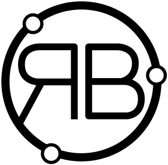

ORB Documentation¶
{kind=link}
Welcome to ORB documentation !
ORB is the kernel module for the whole suite of data reduction and analysis tools for SpIOMM and SITELLE: ORBS, ORCS, OACS, ORUS and IRIS.
SpIOMM (Spectromètre Imageur de l’Observatoire du Mont Mégantic) is an astronomical instrument operating at Mont Mégantic (Québec, CANADA) designed to obtain the visible spectra of all the objects in a 12 arc minutes field of view.
SITELLE (Spectromètre-Imageur pour l’Étude en Long et en Large des raie d’Émissions) is a larger version of SpIOMM operating at the CFHT (Canada-France-Hawaii Telescope, Hawaii, USA). See http://www.cfht.hawaii.edu/Instruments/Sitelle
Documentation¶
- orb package
- Subpackages
- orb.ext package
- orb.utils package
- Submodules
- orb.utils.astrometry module
- orb.utils.err module
- orb.utils.fft module
- orb.utils.filters module
- orb.utils.fit module
- orb.utils.image module
- orb.utils.io module
- orb.utils.log module
- orb.utils.misc module
- orb.utils.parallel module
- orb.utils.photometry module
- orb.utils.sim module
- orb.utils.spectrum module
- orb.utils.stats module
- orb.utils.validate module
- orb.utils.vector module
- orb.utils.web module
- Submodules
- orb.astrometry module
- orb.cgvar module
- orb.constants module
- orb.core module
- orb.cutils module
- orb.etc module
- orb.fit module
- Module contents
- Subpackages